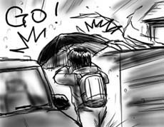

夜更けすぎに雪へと変わった挙げ句に朝まで降り続けているなんて！(挨拶)
残念ながら僕はカメハメハ王族の家系に生まれつかなかったので，会社には行かねばなりません，傘を引っ掴んで外へ飛び出します．外は一面の銀世界，そして車車車…車の列．むしろ一列の鉄世界でした．
傘を差しながらでは車の脇を通り過ぎることもできず，隙間があるかと思ったらそこは泥んこみぞれ雪が僕を待ち構えているという進退極まった状態で大変困っていたのですが，車内で余裕の表情を浮かべるドライバを見たおかげで遠慮なく傘を車体にぶつけながらすり抜けることが出来ました．文字どおりの狭さ(心が)．朝だから(低血圧)．

雪や水たまりのせいでどうしても歩きがもたつくため速度がかせげず，歩道に人がつまった状態になり，petit集団登校状態に．前方に難所が現れる度に人が後ろに溜まるという大変心によろしくない状態が会社まで続きました．
いつもの倍くらいの時間をかけて会社にたどり着くと「うわ，来たよ」と驚きの表情で迎えられました．人すごいまばらだし．もっとゆっくり来ればよかったよ(遅刻になります)．
(昨日からの続き)秋葉から神田に移動して，鴨しゃぶ屋に入った一行．さて!?
入店するやいなや，座敷席でいい感じに出来上がった老紳士の集団が宴会をしている声が店内に響きわたっていました．こじんまりとした店内は，テーブル席×3＋座敷という感じなので，否が応にも宴会と相対することになります．
座敷へ料理を運ぶ女性店員の足をなで回して「姉ちゃん，エエ足しとるノォ」というのは現実には初めて聞きましたよ！そんな店じゃないのに！
老人たちの饗宴を感覚器から追い出すことが出来ないまま鴨を食していると，今度はコンパニオンを連れた背広族(2 on 2)が入店してきました．
「今日は朝まで連れまわしてン」と甘えるコンパニオンや，「あ，友達からメールだ」「友達かわいい？」「えー，かわいいけど紹介しないよー」という会話などを感覚器から追い出すことが出来ないまま，僕達は鴨を食していました．鴨は涙が出るくらいうまいけど，違う涙が溢れそうです．
宴会を終えて座敷から出てきた老人達は，そんな日本サラリーマン地獄絵図の様相を呈してきたテーブル席を見るやいなや，口々に言い放ちました．「お！こっちは若い娘(コ)がいてええノゥ！」「やっぱ若いんがええノゥ！」
神様！なんだ今日!?(いきなりタメ口)
老人たちに次いで背広族もとっとと次の盛り場に出かけた(妄想)ので，ようやく平和な食事を取り戻すことが出来たのですが，団塊世代もバブル期入社組もガンガンとお残ししてたのが印象的でした．哲に「神田ってこんなとこ？(ビジネス街ってこんなとこ？)」と聞いたところ，「こんなところ」という答えが帰ってきました．異様に風俗とかあるしね．
西原さんと哲と秋葉へ繰り出してメモリなどを成敗する約束だったのですが，ニューマシンの設定に手間どっていたせいで1時間以上遅刻してしまいました．すいません．
到着後，彼等に電話をかけると「今Cure Maid Cafe(要はメイド喫茶)に入ったから来い！」と言われました．相変わらずお好きで困ります．
喫茶で適当にダベった後，店を出ようとするとどこから聞き付けたのか，老紳士の一団がにこやかに順番待ちをしていて相当あせりました．メイド喫茶に回春の効果が!?

店を出た後，メモリを成敗に出かけたのですが，事前に調べていた最安値のお店がなかなか見つからず，さまよっている間に件のお店は閉店していました．雨がそぼ降る中，半閉まりのシャッターの前で泣き崩れました．
その後，神田に移動して哲お勧めの鴨しゃぶを食したのですが，長くなりそうなので明日の日記に続きます．
みなさん，一週間のご無沙汰でした．ようやくマイPowerBookG4が復活しました．
復活したら，画面の広さが1.4倍に，CPUが2.5倍に，VRAMが8倍に，ドライブがコンボドライブに，電源アダプタが小さくコンパクトに，そして僕の口座から大量の万札が引き落としになっていました．
というか，それは買い換えです．
今まで使っていたマシンは現在かなり値落ちしていて，買い換えを考えるとこれ以上落ちる前に売り払った方がよいだろうと判断したのでした．次機種のリリースまで待っていたら目も当てられない価格になってそうでしたし．というわけで決定即売却したので，新しいのが届くまで一週間も無マシン状態になってしまいました．売却もできないような古マシンが残っていたので，チャットなどは一応出来たんですけどね．
届いて驚きましたが，今までのPowerBookG4筐体に感じていた不満点がほとんど全て解消されています．
- 筐体の強度が増した．キーボードの剛性も上がった．
- 液晶がくっきり鮮やかに．
- 塗装がよくなって手触りがよい．
- ゴム足が机に張り付かなくなった(ゴム足が取れにくくなった)．
- 廃熱が改善されて手に触れる部分は全然熱くならない(クロック向上を考えると脅威)．
- HDDがアホみたいに静か．
など．
総じて大満足ですが，もうちょっと財布に優しい方がうれしいです．歴代マシンを考えてみると，Appleにはすでに1M円ほど投入しているわけで，なんかそろそろ配当とかあってもいいんじゃないかナァ(ない)．
前のマシンで懸念だったPhotoshopも何のひっかかりもなく動くので，Classicとは本格的にサヨナラです．ニューマシンは，無駄を徹底的に排除した中にミニマルな美しさをたたえている薄型の金属物体ということで「オッカムの剃刀(Occam's Razor)」と名付けました．